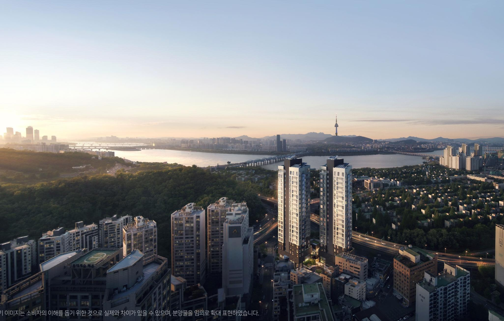
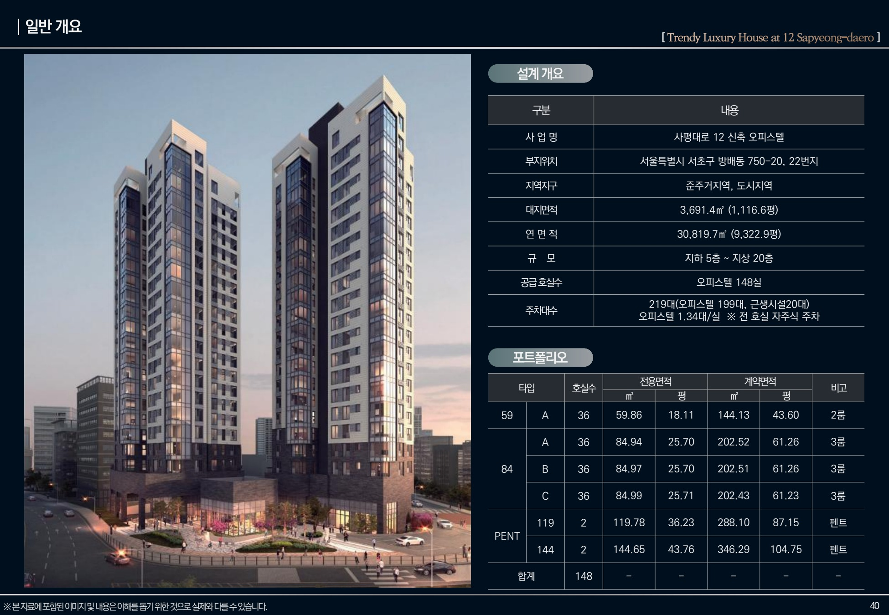
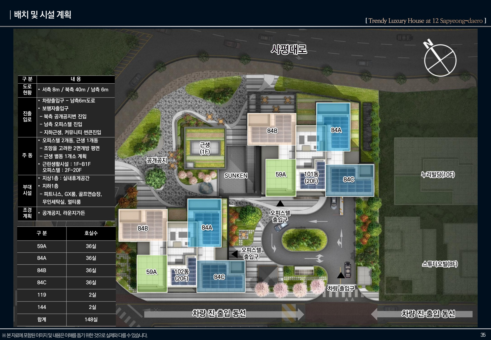
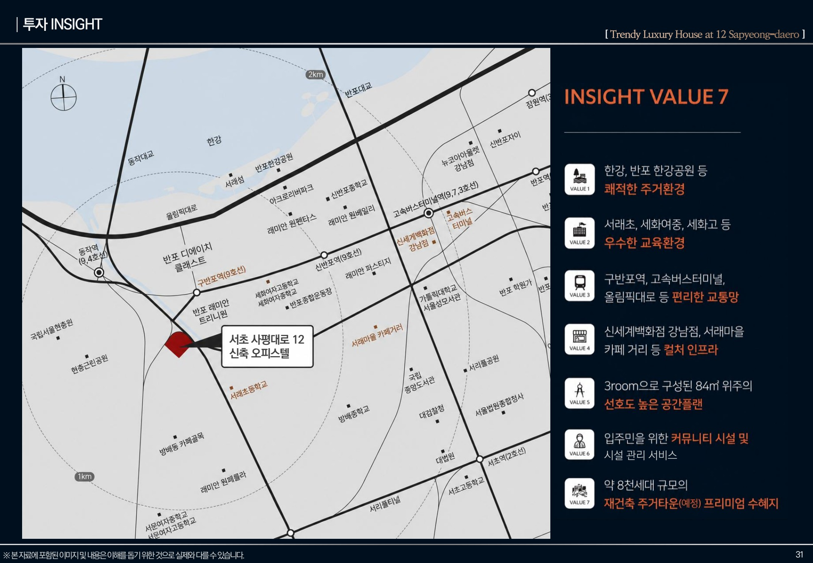
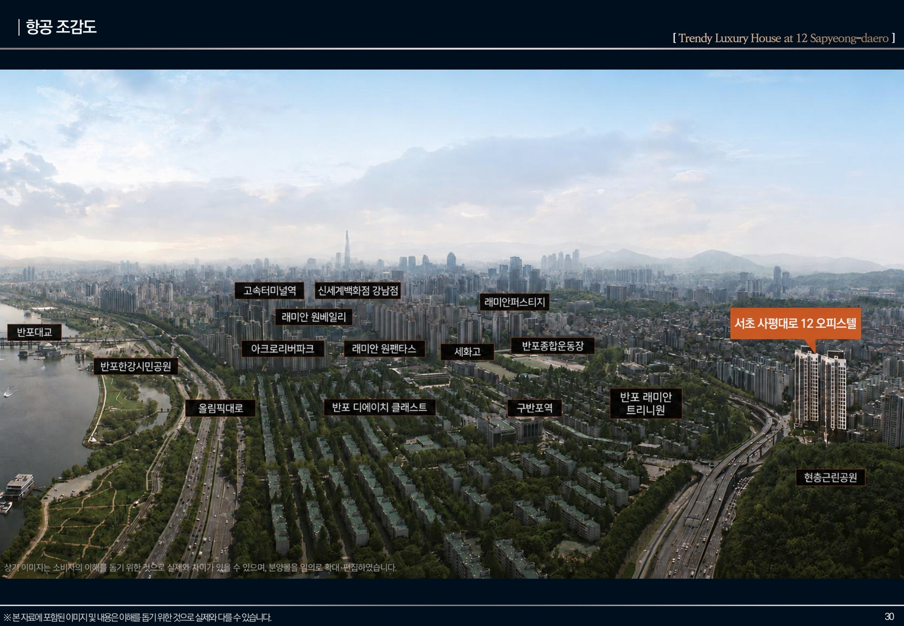
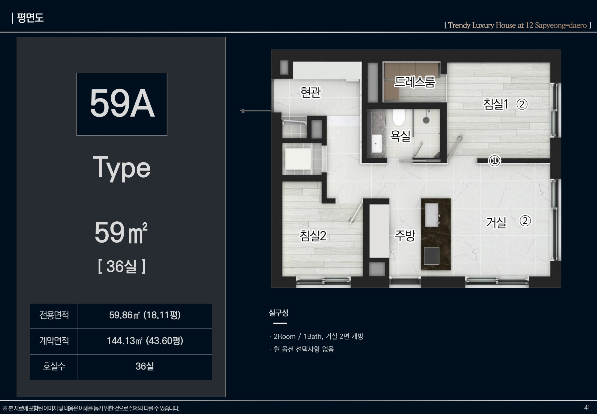
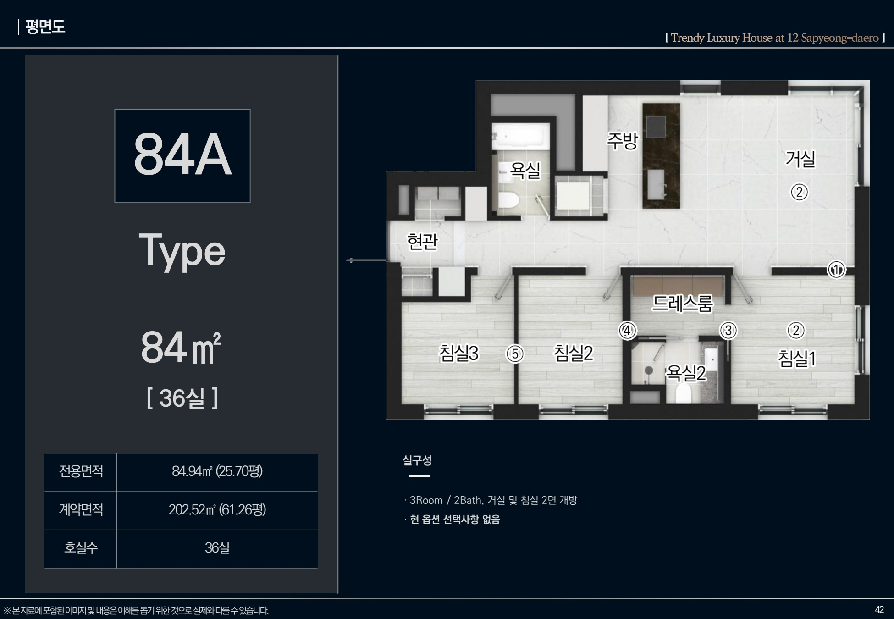
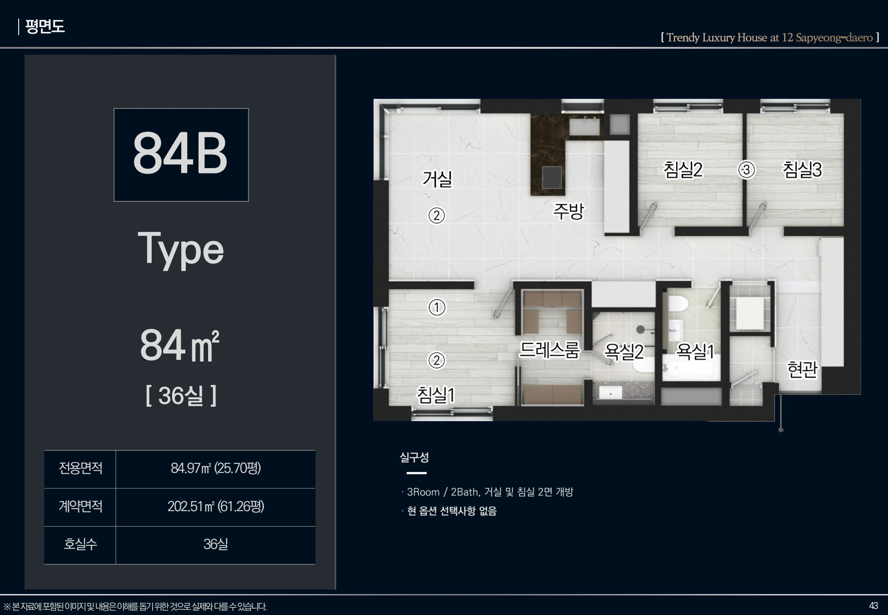
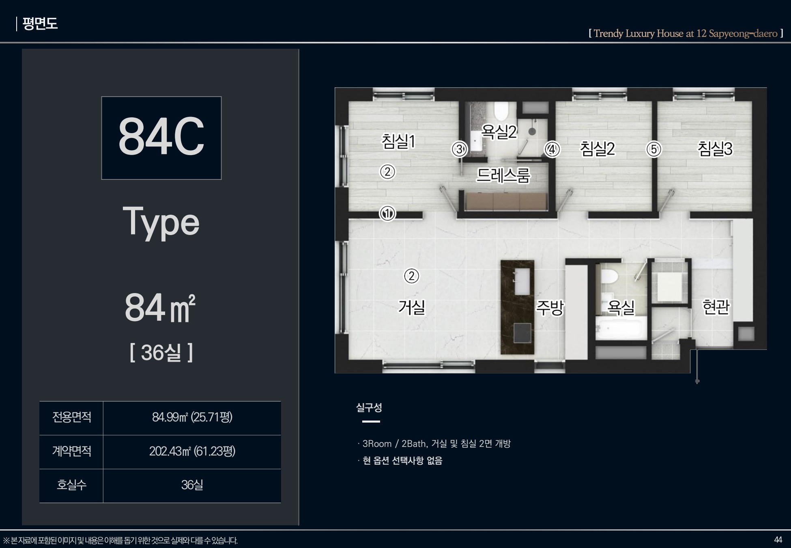

사평대로12 · 건물명
인시그니아 반포
반포의 일상에새로운 품격을 더하다.59A · 84A · 84B · 84C
서초 사평대로의 오피스텔분양가: 15억대~ (부가세 별도)
건축규모최고 20층
전체 공급148실
기본 공급형59 · 84㎡
주차대수219대
PROJECT OVERVIEW
사업개요
사평대로12
건물명 인시그니아 반포

단지배치 및 시설계획

제공하신 2026년 7월 교육자료 기준입니다. 사업 내용·시설·면적과 이미지는 실제 및 인허가 자료와 차이가 있을 수 있습니다.
LOCATION
한강과 반포를 잇는 생활권
교육자료의 입지지도와 주변 항공 안내도로
교통·학교·생활시설의 위치를 확인해 보세요.


현장 주소서울특별시 서초구 사평대로 12
지도와 주변 환경은 교육자료 작성 시점의 안내입니다. 예정 정비사업, 교통 운영과 학교 배정 등은 관계기관의 최신 안내를 확인해 주세요.
UNIT PLAN
평면안내
59A·84A·84B·84C
타입을 누르면 해당 평면도가 열립니다.
59A 평면도
전용 59.86㎡계약 144.13㎡2Room · 1Bath

84A 평면도
전용 84.94㎡계약 202.52㎡3Room · 2Bath

84B 평면도
전용 84.97㎡계약 202.51㎡3Room · 2Bath

84C 평면도
전용 84.99㎡계약 202.43㎡3Room · 2Bath

제공 교육자료의 실제 평면 안내입니다. 이미지와 실제 호실은 차이가 있을 수 있으며, 구조·면적·마감 및 옵션은 현장과 계약자료에서 확인해 주세요. 펜트하우스 개별 도면은 확인 후 추가합니다.
CUSTOMER CONTACT
관심고객 접수
성함과 연락처를 남겨주시면 안내해 드립니다.